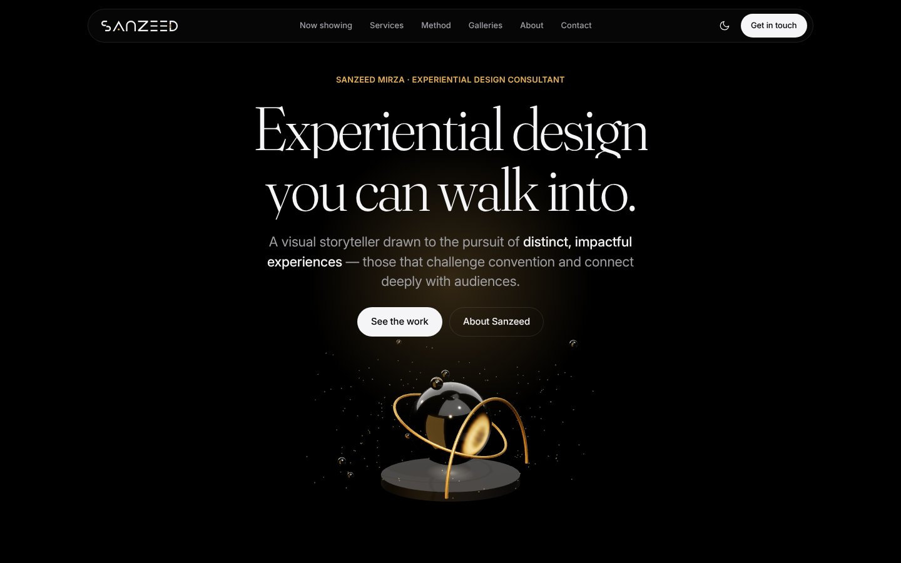

Brand introduction.
A brief on one side, a visitor on the other. Sanzeed’s work carries the light across — and so does every rule in this manual.
- 1.1The one idea
- 1.2The identity at a glance
- 1.3How to use this manual
Carry the light across.
The brand idea, derived from confirmed copy on sanzeed.com and recorded in 01_BRAND_STRATEGY/Brand_Strategy.md §1.
The site already says it: “Between two points of light. A brief on one side, a visitor on the other. Seven ways to carry the light across.” A client arrives with an intention; a visitor leaves with a memory. Everything in between — the story, the room, the light, the timing, the team — is carried across without dropping it.
Every part of this identity serves that idea. The system is built from three things, and only three:
- The point
- The gold dot — the point of light. The brand’s smallest unit and its most recognisable: it sits in the wordmark, ends the signature (“Sanzeed.”), closes headlines (“lit.”) and becomes the symbol.
- The beam
- The hairline the point travels along. The route through a museum, the timeline of a career, the rule in a document.
- The room
- The dark field everything sits in. Black is not a background colour here; it is the gallery before the lights come up.

The whole room, on one page.
Wordmark, colour, type, imagery and voice — the five things every piece is checked against.
#000000
#0D0D0F
#E9B25A
#F5F0E7
#B8863B
Fraunces 300 · opsz 144 · sentence case, full stop, the last word may be lit
Inter Tight 600 eyebrows and titles · Inter 400 for everything read
15+ years · 8+ years experiential & museum · 60+ museums & centres

Read the rule, look at the room.
The manual is organised from meaning to mark to material to application. Each chapter is self-contained; the appendix indexes the package.
| Chapters | Part | What it governs |
|---|---|---|
| 01–04 | Why | Strategy, positioning, personality and voice: what the identity means and how it sounds. |
| 05–11 | The mark | Logo system, construction, colour versions, clear space, minimum sizes, misuse, signature and monogram. |
| 12–16 | The system | Colour, typography, graphic elements, iconography and photography — the material every application is built from. |
| 17–23 | Applications | Website, digital assets, social, print, marketing, signage and motion — each shown as delivered, with its specifications. |
| 24–26 | Words and production | Voice and communication, the applications gallery, file formats, naming and production specifications. |
| A | Appendix | Delivery index of the package folders, so every file in this manual can be found. |
- Start with the rule, then look at the asset. Every page shows the file it governs, with its wall label and its path in the package.
- Use the delivered files; never redraw. Logos, patterns, icons and templates are in their folders as SVG, PDF, PNG, HTML, DOCX and PPTX. Link or copy them.
- Dark is the gallery, Plaster is the label. Screens, social, video and covers are dark; documents and print are light. The pairing rules in chapter 07 follow from this.
- One gold accent per composition. If you have added a second, remove one.
- Real copy, real rooms. Only confirmed copy from 01_BRAND_STRATEGY; only the client’s own project imagery. Fields the client must fill are bracketed, never invented.
- Verify by looking. Render, open, check the logo variant, clear space, accent, type and clipping before anything leaves the studio.
